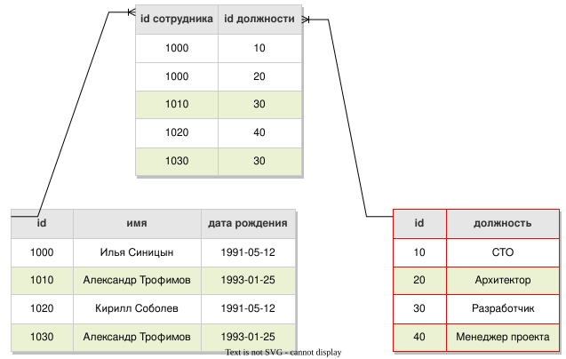
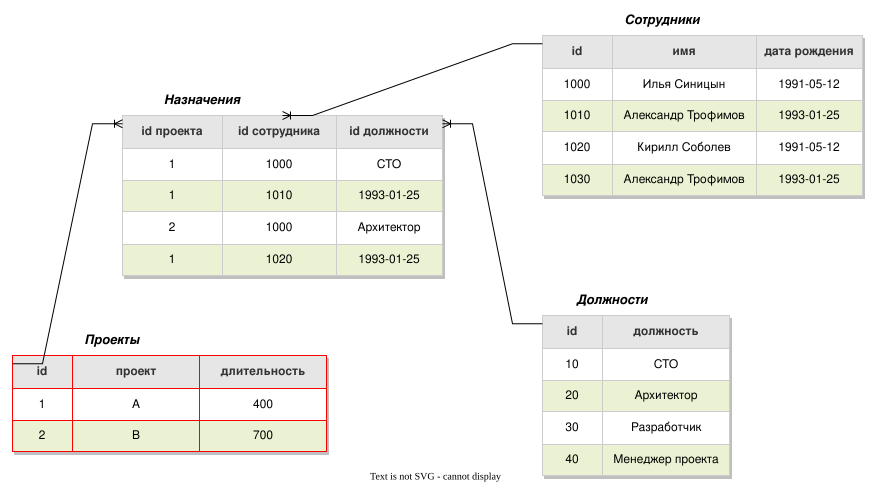
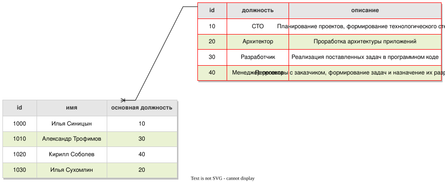

Нормализация
Нормализация- это приведение БД к виду, отвечающему нормальным формам. Нормальная форма - это набор формальных критериев к структуре БД.- В результате нормализации БД шаг за шагом избавляется от логической избыточности. Логическая избыточность проявляется в дублировании данных в нескольких таблицах, за счет чего повышается вероятность приведения БД в противоречивое состояние. В одном месте данные обновили, а в другом нет - появилось противоречие, где же правильные данные?
- Список нормальных форм, от менее к более строгим:
- Ненормализованная форма или нулевая нормальная форма (UNF)
- Первая нормальная форма (1NF)
- Вторая нормальная форма (2NF)
- Третья нормальная форма (3NF)
- Нормальная форма Бойса-Кодда (BCNF)
- Четвертая нормальная форма (4NF)
- Пятая нормальная форма (5NF)
- Доменно-ключевая нормальная форма (DKNF)
- Шестая нормальная форма (6NF)
- БД считается нормализованной, если находится минимум в 3НФ.
- На практике редко доходит до дальнейшей нормализации, потому что 3НФ уже устраняет достаточное количество проблем, но еще не приводит к снижению производительности и усложнению восприятия. Ситуации, когда нужна 4НФ довольно редки, а 5НФ и дальше относятся больше к теории, чем к реальному миру.
- То, что БД находится в какой-то НФ автоматически означает, что она уже находится и в предыдущих НФ.
Нормальные формы
Первая нормальная форма
На удивление я не нашел каких-то единых определений для 1НФ. Сколько сайтов, столько и мнений. Некоторые вещи кажутся странными, но как будто все же не лишенными смысла. Поэтому я решил их тоже выписать. В “основные критерии” я буду выписывать то, что показалось наиболее правдоподобным, а в “дополнительные критерии” - то, что любопытно, но сомнительно или неоднозначно.
Основные критерии:
- Хранящиеся в каждом столбце данные должны быть скалярными. Т.е. поле не может хранить список значений.
Дополнительные критерии:
В таблице не может быть повторяющихся строк.
Требование странное, потому что, насколько я понимаю, в реляционной модели таблица, которая имеет повторяющиеся строки (т.е. по сути это означает отсутствие первичного ключа), вообще за таблицу даже не считается.
В таблице не может быть полей, которые имеют одинаковый смысл.
Например, не может быть два поля под телефон - один домашний, другой рабочий. Потому что при появлении человека с тремя телефонами это бы означало необходимость переделывать структуру таблицы.
В столбце хранятся данные одного типа.
Требование странное, потому что опять же, такая таблица не может называться реляционной. Технически невозможно создать в СУБД таблицу, в один и тот же столбец можно было бы сохранить и дату, и строку. Еще приводится пример, когда физически тип данных один, например, целое число, но логически в столбце хранятся разные значения, например, зарплата в рублях и в долларах.
Порядок строк столбцов не имеет значения.
Что-то из области фантастики. Тут даже трудно пример придумать, когда бы последовательность имела значение. Вероятно, тут какой-нибудь абсурдный пример вроде хранения пин-кода, по столбцу на каждую цифру, с неговорящими ничего названиями.
Пример нарушения критериев 1НФ (галочками одних цветов обозначены одинаковые даты рождения для наглядности, а Александры Трофимовы - это два разных сотрудника, у которых просто все совпадает, но по id видно, что это не один и тот же человек):
| # | id сотрудника :key: | имя | должность | дата рождения |
|---|---|---|---|---|
| 1 | 1000 | Илья Синицын | CTO, архитектор | 1991-05-12 :ballot_box_with_check: |
| 2 | 1010 | Александр Трофимов | Разработчик | 1993-01-25 :white_check_mark: |
| 3 | 1020 | Кирилл Соболев | Менеджер проекта | 1991-05-12 :ballot_box_with_check: |
| 4 | 1030 | Александр Трофимов | Разработчик | 1993-01-25 :white_check_mark: |
В чем ошибка:
- Предположим, для каждого сотрудника может быть определено несколько
должностей, которые он может занимать в зависимости от своих навыков.
Ошибка в том, что в 1 строке в поле
должностьуказано несколько значений через запятую, т.е. оно не является скалярным. Если, например, понадобится узнать, сколько в компании людей, способных занимать те или иные должности, такой формат хранения задачу усложнит.
Как исправить:
- Сформировать на основе столбца, содержащего несколько значений, отдельную таблицу и связать с помощью внешнего ключа с исходной таблицей.

Вторая нормальная форма
Критерии:
- Каждое неключевое поле должно зависеть от первичного ключа. Если он составной, то неключевое поле должно зависеть от него целиком, а не от его части (неключевые поля - это поля, которые не входят в состав первичного ключа).
Если Y зависит от X (обозначается как X→Y ), то это значит что по значению X можно однозначно определить значение Y. X в данном случае называется детерминантом, а тип зависимости - функциональная.
Пример нарушения 2НФ:
| проект :key: | сотрудник :key: | должность | длительность проекта |
|---|---|---|---|
| A | Илья Синицын | CTO | 400 |
| A | Александр Трофимов | Разработчик | 400 |
| B | Илья Синицын | Архитектор | 700 |
| A | Кирилл Соболев | Менеджер проекта | 400 |
В чем ошибка:
- Здесь составной первичный ключ - проект и сотрудник. На примере Ильи Синицына видно, что только оба поля вместе позволяют однозначно определить должность, т.к. он участвует в двух проектах под разными должностями. А вот поле длительность указывает на длительность проекта в целом и, соответственно, для ее определения достаточно только проекта, а сотрудник не нужен. Это и есть нарушение 2НФ - поле зависит только от части полей, составляющих первичный ключ.
Как исправить:
- Сгруппировать поле, нарушающее правило, и его детерминант в отдельной таблице и связать с исходной с помощью внешнего ключа.

Третья нормальная форма
Критерии:
- Неключевые поля не должны зависеть от других неключевых полей.
Пример нарушения 3НФ:
| id сотрудника :key: | имя | должность | описание должности |
|---|---|---|---|
| 1000 | Илья Синицын | CTO | Планирование проектов, формирование технологического стека |
| 1010 | Александр Трофимов | Разработчик | Реализация поставленных задач в программном коде |
| 1020 | Кирилл Соболев | Менеджер проекта | Переговоры с заказчиком, формирование задач и назначение их разработчикам |
| 1030 | Илья Сухомлин | Архитектор | Проработка архитектуры приложений |
В чем ошибка:
- Предположим, что у каждого сотрудника есть основная должность, в которой он особенно хорош, и поэтому эта должность хранится непосредственно “рядом” с сотрудником. Т.е. должность зависит от id сотрудника. Но описание должности зависит не от id сотрудника, а от самой должности (это называется транзитивная зависимость). В этом и есть ошибка - неключевой атрибут “описание должности” зависит от другого неключевого атрибута “должность”.
Как исправить:
- Оформить зависимость в виде отдельной таблицы и связать с помощью внешнего ключа с исходной таблицей.

Денормализация
TODO: https://habr.com/ru/companies/latera/articles/281262/